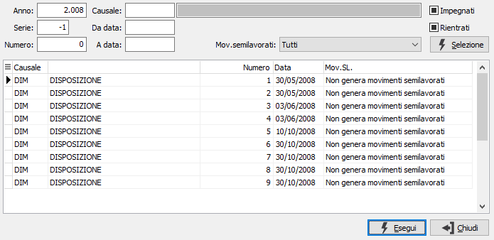
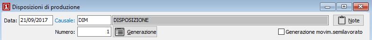
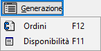
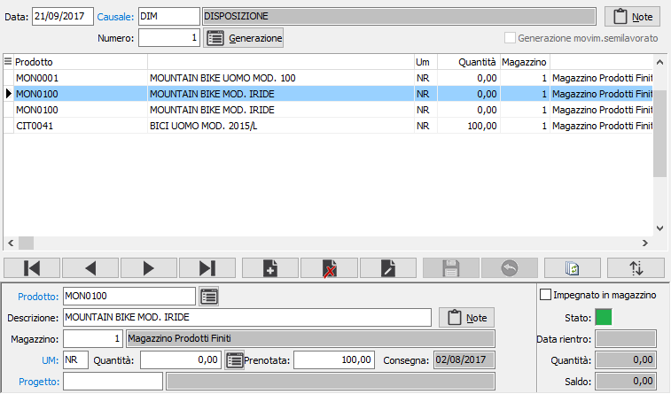
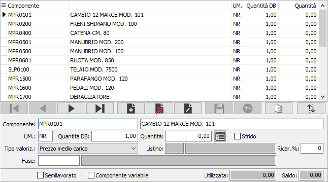

Il bottone Dettaglio consente l'accesso alla finestra contenete le righe di dettaglio che si riferiscono al prodotto corrente.
Il bottone Dettaglio consente l'accesso alla finestra contenete le righe di dettaglio che si riferiscono al prodotto corrente.Gestione disposizioni di produzione
Il programma di Gestione disposizioni di produzione consente di inserire, variare, cancellare e stampare le disposizioni. Al momento del primo accesso al programma, lo stesso si situa in modalità di Visualizzazione.
Il cursore si posiziona sul campo data. Su questo campo l’utente deve definire il tipo di azione che intende compiere. In altre parole, deve decidere se inserire nuove disposizioni, oppure visualizzare, modificare, cancellare o stampare disposizioni esistenti. L’azione da compiere può essere comandata tramite la pressione di alcuni pulsanti della tool bar o tramite l’uso dei corrispondenti tasti funzione.
Ricerca e visualizzazione di una disposizione
Cliccando due volte sul campo data o premendo il tasto funzione F9, si apre la finestra video di Ricerca disposizioni.

La finestra video di Ricerca disposizioni presenta in primo luogo il pannello di input costituito da alcuni campi per inserire “filtri” o parametri di ricerca che consentono di limitare il numero di disposizioni da presentare a video.
E’ possibile infatti indicare l’anno a cui si riferiscono le disposizioni da individuare, oppure il codice (con possibilità di ricerca tramite lo zoom F9) della causale disposizione da ricercare, oppure le date di inizio e fine ricerca, oppure se ricercare solo le disposizioni impegnate o rientrate e viceversa, o più parametri fra quelli indicati. Conoscendolo, è possibile indicare il numero di disposizione da ricercare.
Qualsiasi parametro si sia inserito, occorre attivare la selezione cliccando sul bottone Selezione. Attivata la selezione, nella griglia della sezione video inferiore vengono visualizzati tutti le disposizioni esistenti coerenti con i parametri di selezione inseriti. Utilizzando i tasti freccia su o freccia giù, oppure usando il mouse, ci si posiziona sul rigo relativo alla disposizione da trattare, selezionandolo quando una delle celle di tale rigo viene evidenziata. Cliccando quindi sul bottone Esegui o cliccando due volte sul rigo attivo, viene visualizzata la disposizione selezionata.
Dati generali
La parte superiore contiene i dati generali relativi alla disposizione in esame ed il pulsante di generazione dati da ordini.

DATA: definisce la data in cui viene eseguita la disposizione. Viene proposta la data di sistema.
CAUSALE: codice alfanumerico di 3 caratteri presente nella tabella Causali Disposizioni che definisce la tipologia di disposizione in esame. La causale determina anche la possibilità di generare i movimenti d'impegno dei prodotti. Sul campo sono attive le funzioni di ricerca (F9) ed accesso rapido (CTRL+W) sulla tabella stessa. Se prevista una causale predefinita in configurazione produzione, questa sarà proposta in automatico.
NUMERO:

campo numerico che contiene il numero progressivo della disposizione. Viene completato automaticamente dal programma in base alla serie contenuta dalla causale. E’ modificabile dall’utente. Premendo il tasto F12 oppure l'apposito pulsante è possibile effettuare la selezione degli ordini, da inserire nella disposizione. Premendo il tasto F11 oppure l'apposito pulsante è possibile effettuare la selezione dalle disponibilità, per inserire i prodotti nella disposizione.GENERAZIONE MOVIMENTI SEMILAVORATI: Solo in fase di inserimento di una nuova disposizione e se gestita la movimentazione in configurazione produzione, è possibile scegliere se per la disposizione corrente dovranno essere generati i movimenti per i semilavorati spuntando questa casella. Così facendo in fase di generazione dettaglio, se il prodotto deriva da distinta base, non saranno generati i componenti di eventuali semilavorati, ma sarà trattato direttamente quest'ultimo.
Dati di rigo
La sezione inferiore consente l'inserimento, la manutenzione e la cancellazione delle righe della disposizione. Se attiva la gestione dei progetti sarà presente il codice del progetto, sia nel caso la gestione progetti sia di testata, che di rigo il progetto compare sempre sulle righe di disposizione.

PRODOTTO: campo alfanumerico per inserire il codice dell’articolo che si intende utilizzare. Se il prodotto ha una sua distinta base sarà generato in automatico il dettaglio del rigo (vedi paragrafo successivo). Sul campo sono attive le funzioni di ricerca (F9) ed accesso rapido alla tabella (CTRL+W).
DESCRIZIONE: campo alfanumerico di 60 caratteri per descrivere il prodotto.
BOTTONE NOTE: bottone che abilita un campo annotazioni, relative al rigo attivo, che verranno stampate sulla disposizione.
MAGAZZINO: codice del magazzino da cui deve essere disposta la merce. Viene proposto in automatico da un rigo all'altro. Sul campo sono attive le funzioni di ricerca (F9).
UNITÀ DI MISURA: campo alfanumerico di 3 caratteri, presente nella tabella Unità di misura, per descrivere l’unità di misura del prodotto. Sul campo sono attive le funzioni di ricerca (F9) ed accesso rapido alla tabella (CTRL+W). Tramite il tasto funzione F11 si può accedere alla finestra relativa al fattore di conversione.
QUANTITÀ: campo numerico per inserire la quantità da disporre per il prodotto attivo. Se attiva la gestione del dettaglio quantità per questo documento, è presente il bottone dettaglio, a destra del campo, tramite il quale sarà visualizzata la relativa finestra di dettaglio quantità; l'attivazione della finestra avviene comunque in automatico al momento dell'accesso al campo quantità.
CODICE PROGETTO: Codice alfanumerico di 15 caratteri che definisce il progetto di riferimento. Sul campo sono attive le funzioni di ricerca (F9) ed accesso diretto alla tabella (CTRL+W). Il campo è presente solo se attiva la gestione progetti, sia nel caso la gestione progetti sia di testata, che di rigo il progetto compare sempre sul rigo di disposizione..
A lato di ogni riga vengono visualizzate le informazioni relative all'impegno ed al rientro del rigo stesso. Il campo "Impegnato in magazzino" conterrà la spunta se per il rigo è già stato generato un impegno; il pannello colorato sarà verde se non è stata compiuta nessuna operazione, rosso se la disposizione risulta completamente rientrata e giallo se risulta parzialmente rientrata. In questo caso compariranno anche la quantità rientrata e la data in cui è stato effettuato l'ultimo rientro. Facendo doppio clic sul pannello colorato saranno visualizzati i dati relativi ad i rientri effettuati.
Dati di dettaglio
Il bottone Dettaglio consente l'accesso alla finestra contenete le righe di dettaglio che si riferiscono al prodotto corrente.

Nel dettaglio del rigo, generato in automatico se il prodotto ha una distinta base, sono presenti i seguenti campi:
COMPONENTE: codice del prodotto componente dell'articolo presente sul rigo in esame. Sul campo sono disponibili le funzioni di ricerca (F9).
DESCRIZIONE: descrizione interna del componente.
UM.: unità di misura del componente all'interno del dettaglio. Sul campo sono disponibili le funzioni di ricerca (F9). Tramite il tasto funzione F11 si può accedere alla finestra relativa al fattore di conversione.
QUANTITÀ: definisce la quantità necessaria del componente per la composizione del singolo prodotto. Se attiva la gestione del dettaglio quantità per questo documento, è presente il bottone dettaglio, a destra del campo, tramite il quale sarà visualizzata la relativa finestra di dettaglio quantità; l'attivazione della finestra avviene comunque in automatico al momento dell'accesso al campo quantità.
TIPO VALORIZZAZIONE: indica l'eventuale tipo di valorizzazione da applicare al componente corrente. Valori possibili:
Nessuna
Prezzo medio di carico
Costo ultimo carico
Costo di mercato
Prezzo di vendita
Prezzo di listino
LISTINO: eventuale codice del listino prezzi da utilizzare per ricercare il costo del componente. Sul campo sono attive le funzioni di ricerca (F9).
%RICARICO: eventuale percentuale di maggiorazione da applicare al costo del componente.
SEMILAVORATO: la spunta su questa casella indica che il componente è un semilavorato. Questa indicazione è presente solo se il prodotto ha una scheda tecnica.
COMPONENTE VARIABILE: la spunta su questa casella indica che il componente, sulla distinta base, è stato definito di tipo variabile e che il prodotto riportato in automatico è quello generico. Questa prestazione è disponibile solo per la versione Enterprise e deve essere attivata tramite la configurazione distinta base.